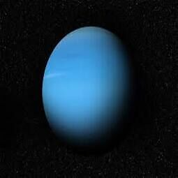

Nie można polizać łokciaJeśli kichasz zbyt mocno, możesz złamać żebro.Trzydzieści pięć procent osób korzystających z reklam osobistych do randek jest już w związku małżeńskim.Ponad 75% osób, które to przeczytają, spróbuje polizać łokieć. System demokracji został wprowadzony 2500 lat temu w Atenach w Grecji.

Oś orbity Urana jest nachylona pod kątem 90 stopni.